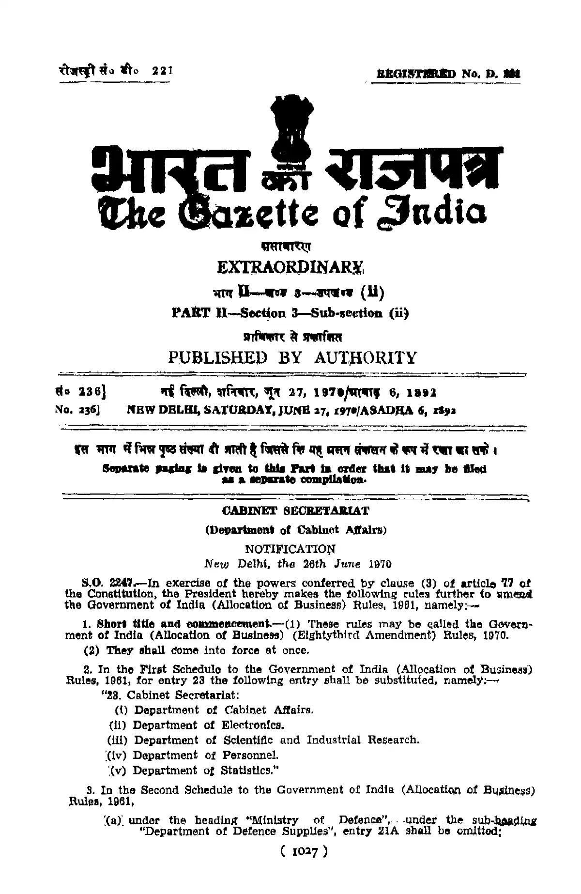
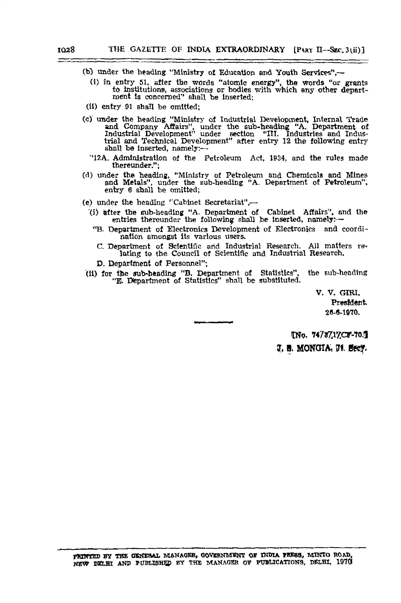

Amendment #83 (S.O. 2247, 1970)
8 changes: 1 to the First Schedule, 7 to the Second Schedule. 8 applied
The order, page by page
Page 1 of 2

12Schedule 1 › entry 23
- 23. Cabinet Secretariat :
- i. Department of Cabinet Affairs.
- ii. Department of Electronics.
- iii. Department of Scientific and Industrial Research.
- iv. Department of Personnel.
- v. Department of Statistics.
applied at schedule 1 › department 23 in the Rules after #83
read hindi missing
Schedule 2 › Ministry of Defence › Department of Defence Supplies › entry 21A
applied at schedule 2 › ministry MINISTRY OF DEFENCE › department Department of Defence Supplies › entry 21A in the Rules after #83
Page 2 of 2

345678Schedule 2 › Ministry of Education and Youth Services › entry 51
for “atomic energy” read “atomic energy or grants to institutions, associations or bodies with which any other department is concerned”
applied at schedule 2 › ministry Ministry of Education and Youth Services › ministry MINISTRY OF EDUCATION › entry 51 in the Rules after #83
Schedule 2 › Ministry of Education and Youth Services › entry 91
applied at schedule 2 › ministry Ministry of Education and Youth Services › ministry MINISTRY OF EDUCATION › entry 91 in the Rules after #83
after Schedule 2 › Ministry of Industrial Development, Internal Trade and Company Affairs › Department of Industrial Development › III. Industries and Industrial and Technical Development › entry 12
- 12A. Administration of the Petroleum Act, 1934, and the rules made thereunder.
applied at schedule 2 › ministry Ministry of Industrial Development, Internal Trade and Company Affairs shall be substituted ›… in the Rules after #83
states inferred loose
Schedule 2 › Ministry of Petroleum and Chemicals and Mines and Metals › Department of Petroleum › entry 6
applied at schedule 2 › ministry MINISTRY OF PETROLEUM AND CHEMICALS AND MINES & METALS › department A › entry 6 in the Rules after #83
after Schedule 2 › Cabinet Secretariat › Department of Cabinet Affairs
- B. Department of Electronics Development of Electronics and coordination amongst its various users.
- C. Department of Scientific and Industrial Research. All matters relating to the Council of Scientific and Industrial Research.
- D. Department of Personnel
applied at schedule 2 › ministry CABINET SECRETARIAT › department B in the Rules after #83
read hindi missing
Schedule 2 › Cabinet Secretariat › Department of Statistics
- E. Department of Statistics
applied at schedule 2 › ministry CABINET SECRETARIAT › department E in the Rules after #83
read hindi missing
How this document was read
Edits to the reading
| Date | By | Edit | Before → after |
|---|---|---|---|
| 12 November 2026 | claude | word corrected | |
| 12 November 2026 | claude | word corrected | |
| 12 November 2026 | claude | word corrected |
Changes placed by an inference rule
| Change | Rule | Status | What |
|---|---|---|---|
| 5 | loose | accepted | change 5: ministry Ministry of Industrial Development, Internal Trade and Company Affairs taken for ministry Ministry of Industrial Development, Internal Trade and Company Affairs shall be… |
From the Government of India (Allocation of Business) Rules, 1961 and their amendments, as published by the Cabinet Secretariat (cabsec.gov.in), read by orgpedia. The readings of the older scanned gazettes have known gaps.